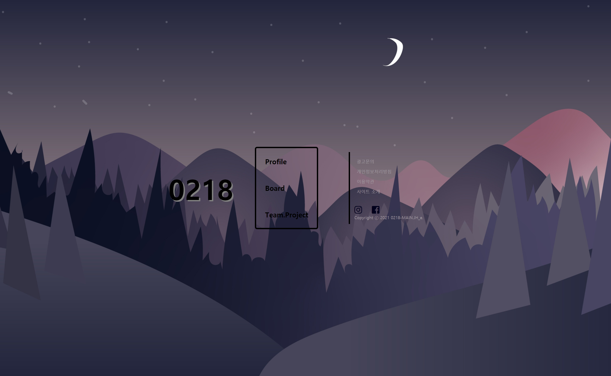
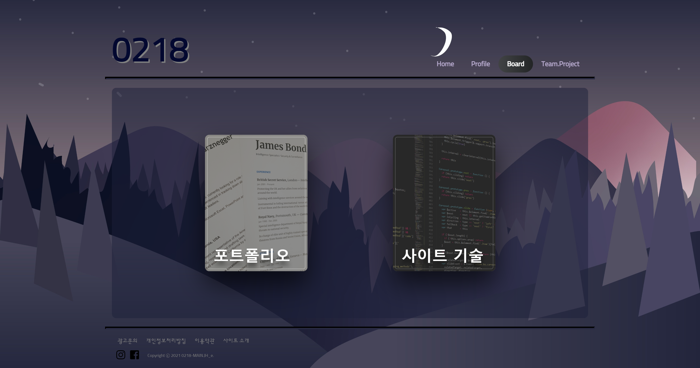

뒤로가기
사이트 기술 소개

Home
Home화면의 경우 다른 페이지와 차별화를 위해 body태그 자체를 disply: flex;로 선언후, 중앙으로 정렬해서 만들었다.
정적이면 심심해보여서 각 구역별로 hover를 사용해 모션을 사용해 보았다.

Profile
Profile페이지 메인은 두가지 섹션으로 나누고, 이미지와 텍스트를 교차시켜 두었다. 사진에 마우스를 올려두면 크기가 살짝 커진다

Board
Board에 있는 모션은 JS없이 CSS로만 만들었다. 해당 이미지에 마우스를 올리면 밑에서 글씨가 나오는데 글씨의 경우 overflow: hidden을 통해 숨겨두었다가 올라오면서 보이게 만들었다.